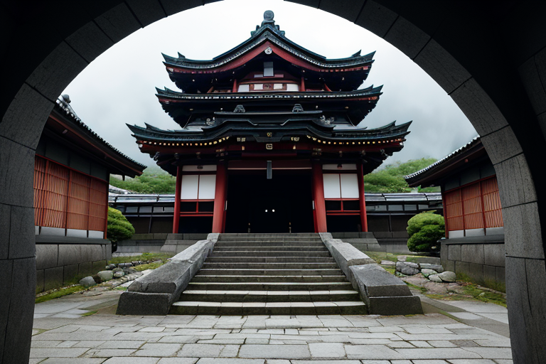
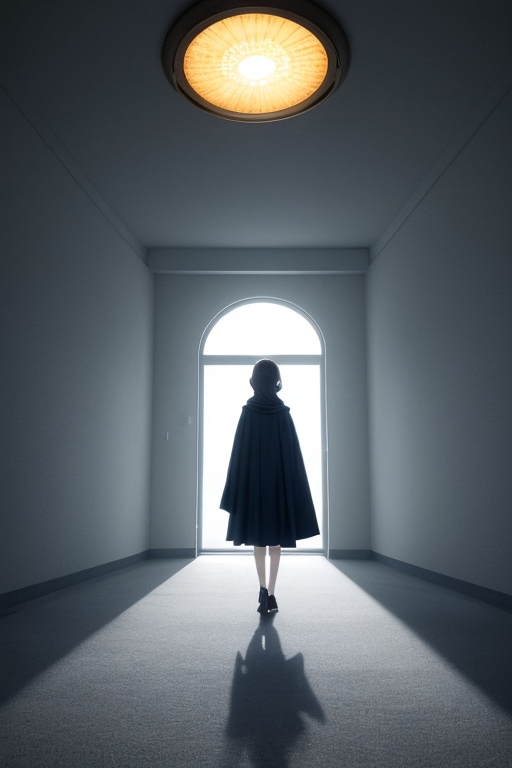
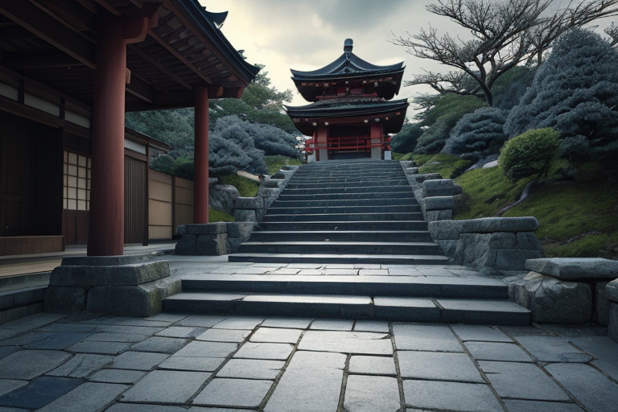
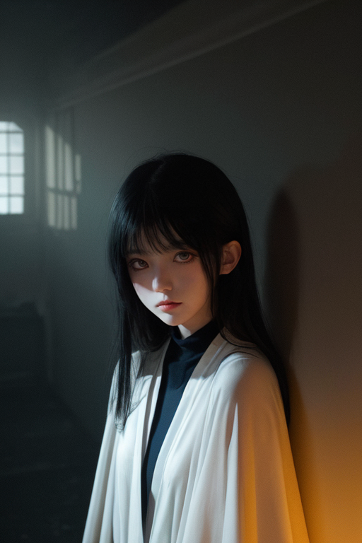

第一章 現実の埼玉
あなたはまだ気づいていない。この土地にも、王がいることを。
秩父神社の石段は、訪れる人々の足音で磨かれている。観光客はカメラを向け、地元の人は手を合わせる。誰もが「今ここ」の神社を見ている。だが、その石段の一つひとつが、一八八四年の冬、自由と生存を求めて立ち上がった農民たちの足跡で刻まれていることには、多くが気づかない。秩父事件——明治政府に抗った民衆蜂起の地。その歴史のうねりは、今は静かな日常の下に沈殿している。
サイタマル・アンブラは、その石段の影に立っていた。濃紺の外套は社殿の陰に溶け込み、銀の細い光が袖口で微かに揺れるだけだ。彼の目は、石段を上る現代の家族や、スマートフォンを見つめる若者たちを、感情なく観察している。ここは歴史の転換点だった。激しい感情と決断が地層を形成した場所。今、その上に築かれた平穏は、脆い氷の層のようでもある。
「歪みは、歴史の重みが生む圧力です」
傍らに、より濃い影が滲んだ。主席妖精アンブラルだ。
「この土地の『日常』は、多くの『非日常』の上に成り立っています」
王は答えない。彼の役目は、その圧力が無秩序な破壊として噴出するのを、ほんの少し調整することだ。英雄でも救世主でもない。ただの調整者。石段の影は、少しだけ深くなった。

第二章 歪みの兆候
鉄道博物館の巨大な車輪が、ゆっくりと回転を続けている。来館した家族連れの笑い声が、静かな展示ホールに響く。その直下、見えない地層では、かつての武蔵国を揺るがした「秩父事件」のうめきが、微細な歪みとして脈打っていた。自由を求めた農民の怒りと絶望は、土地の記憶として沈殿し、時折、現代の人間関係の些細な軋轢や、無気力な閉塞感として、表面ににじみ出る。
サイタマル・アンブラは、巨大な蒸気機関車の影に立っていた。銀色の細い光が、彼の濃紺の衣から、車輪の軸受け部分へと伸びる。妖精カゲミナが、観客の足元に広がる影をほんの少し濃くし、混雑によるイライラを吸い取っていた。
「歴史の圧力は、形を変えて現れます」アンブラルが囁く。「大きな災害ではなく、日常を蝕む小さな『すれ違い』として」
王は目を閉じた。草加煎餅を割る音、秩父の祭り囃子のリズム、狭山茶を淹れる湯気――それら平凡な日常の裏側で、古い傷が蠢くのを感じる。彼の仕事は、その蠢きが破綻へと繋がらないよう、影で支えることだ。車輪の回転は、ほんのわずか、滑らかになった。

第三章 王の葛藤
秩父神社の石段に、冬の冷たい影が長く伸びていた。サイタマル・アンブラは、その影の先に立って、1884年にこの地で燃え上がった「秩父事件」の記憶の残滓を見つめていた。自由を求める農民の叫び、それに対する鎮圧の鉄槌。歴史の大きなうねりが、この土地の地層に、目に見えない圧力として沈殿している。
「今、再び動き出そうとしています」アンブラルが、王の足元の濃い影から声を上げた。「社会の歪みが、新たな『すれ違い』を生み、小さな亀裂を広げようとしている。これを止めるべきか、それとも……変革の流れとして、ある程度まで許容すべきか」
王は無言だった。彼の役割は調整であり、歴史の流れそのものを断ち切ることではない。しかし、微調整の範囲をどこまで許すのか。平凡な日常の裏で蠢くこの圧力は、新しい何かを生むための陣痛なのか、それとも無用な混乱の予兆なのか。
彼は、長瀞の荒川が岩を穿つように、時間が人々の想いを形作る過程を思った。止めることも、促すこともできる。この決断が、無数の日常の行方を、影から決めていく。

第四章 妖精との対話
鉄道博物館の巨大な車輪の影で、アンブラルが微かに震えていた。展示物の陰に溶け込むその姿は、まさにこの王国の本質だった。
「王よ、この圧力は『平凡』への抗議です」
彼女の声は、蒸気機関車の古びた鉄板に触れる風の音のようだった。
「人々は、ただ通り過ぎるだけの土地と思いたがる。武蔵国の中心であったことも、自由を求めて秩父の山で血が流れたことも、忘れられた日常の下に埋もれています」
王は黙って聞く。妖精は続けた。
「影は光を必要とします。このままでは、この土地の誇りそのものが、無色の影と化してしまう。変革は危険です。無用な混乱を招くかもしれません。しかし……調整を怠れば、この土地の『何か』が、音もなく消え去ります。十万石饅頭の甘さも、祭り囃子の響きも、すべてが薄れていく。それは、地震よりも静かな喪失です」
王は、狭山茶の畑が都市の光に浸食されていく様を思い浮かべた。守るべきは、物理的な均衡だけではない。
第五章 微調整と余韻
秩父事件の決行前夜、秩父神社の森は異様な静けさに包まれていた。サイタマル・アンブラは、歴史の歪みが一点に凝縮されるのを感じていた。指導者・田代栄助の胸中には、怒りと絶望、そして明日への決意が渦巻いている。王は知っていた。このままでは、多くの血が流れ、この地の誇りは「凶徒」の烙印と共に、長く深い影に沈むことを。
「調整は、物理的均衡だけにあらず」
王は囁いた。アンブラルが隣に立つ。影の妖精は、田代が懐にしまった一枚の紙片——同志からの、別の行動を促す密書——に、ほんのわずかな湿気を与えた。インクがにじみ、一文字が読めなくなる。その一文字が、決断を一夜遅らせる。
代償は大きかった。王の本体である「影円と細光線」の紋章が、一瞬、色を失った。歴史の流れを一度だけ曲げる。それは、自らの存在の一部を、その瞬間に捧げることに等しい。事件は起こったが、その残酷さはほんの少しだけ和らぎ、後の世に伝わる「秩父事件」の語り口に、一抹の人間味が残された。
祭り囃子は、悲しみと誇りを両方込めて、今も秩父の山に響く。
あなたの町にも、王がいる。